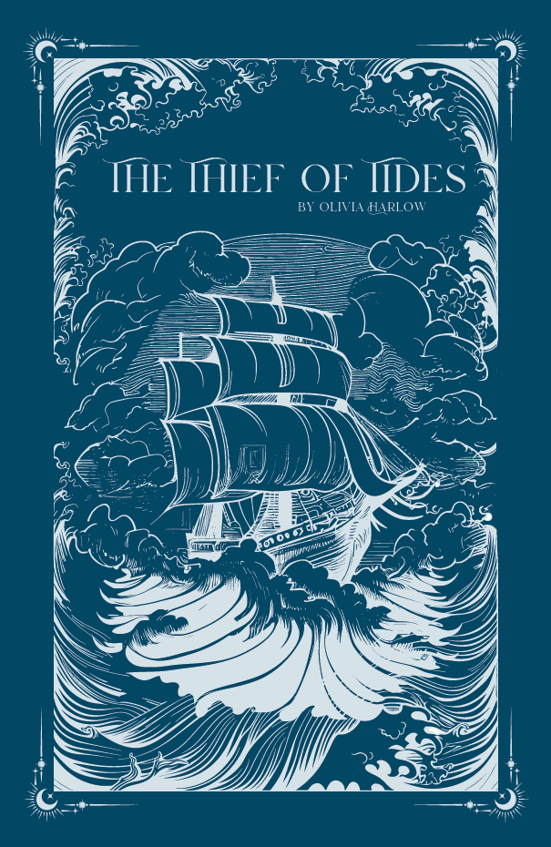
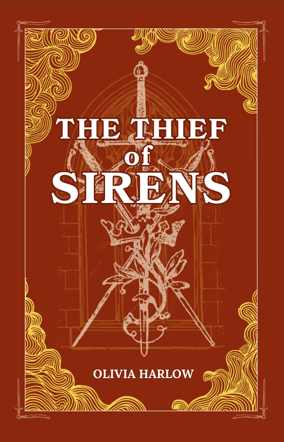

Book one
The Thief of Tides
Adventure fantasy romance
Louie, a notorious pirate known as the "Ghost of the Sea", is offered the opportunity to hunt for a legendary artifact: The Sands of Time. It's said that whoever possesses the Sands will have the power to control time.
With the help of an awkward 15-year-old engineer and an irritatingly beautiful spy, Louie will sail the seas, battling enchanted creatures, her first love turned worst enemy, and a cut-throat rival pirate to claim the most coveted treasure of all.

Book two
The Thief of Sirens
Adventure fantasy romance. Her site lists it for Summer 2026.
After her family of rebels were murdered by hunters, vanisher Ariadne swore vengeance. She would carry out their mission to free divinum and end enchantment once and for all.
Years later, a strange encounter leads Ari to form an unlikely alliance with the empire's princess and her siren companion.
In her words
Hi! I'm Olivia :)
- Gamer
- Artist
- Cat owner
"Has stacks of books on every surface in my home. My rickety Wayfair table can't handle the weight."
Her About page has a section she calls Cute Cat Content. Three of them, in her words:
- Morie"He is not fat. What you see is pure muscle."
- Milo"He likes to lick keyboards, has an unhealthy obsession with Morie, and frequently stares at the TV when it's off."
- Pumpkin"He is extremely smart and knows the commands sit, paw and other paw."
Where to meet her
Saturday
7 November
Local author fair at Bucks County Free Library, Doylestown. She posted about it on Instagram on 23 October. Check her post for the times and her table.
But notorious pirate Louie Aurum knows better.
Sign up for email updates about premium pre-orders, calls for ARC and beta readers, release updates and special edition pop-up sales.
Join the email list